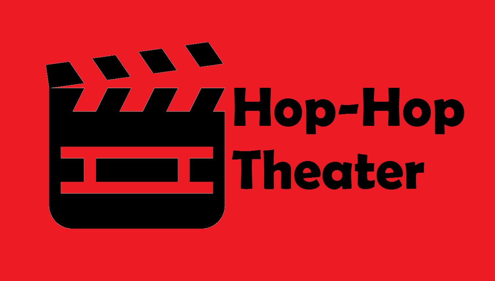

Hop-Hop Theater
Plan Out Your Movie Watching Experience
Hop-Hop-Theater is an mobile application in which users are able to pick from a list of nearby theaters and the movies currently showing in order to stitch together the smoothest movie watching experience. The application was built using the Google Flutter development kit, coded in the Dart programming language, and built/tested in Android Studio. For location, the user can either enter a zip code or use their native geolocation in order to obtain a list of nearby theaters. The backend was built using Nodejs for the server, which every morning would data scrape from the Fandango website the list of movies currently showing within a list of presearched theaters. This data is stored in a MongoDB database and served upon user request in order to allow near instant access to the data. In order to handle asynchronous code, a Future Builder was used to complete the process and build the resulting widget tree upon completion.
This application is a product of a week-long hackathon style endeavor to create something more than a simple web application. The goal was to learn a completely new development environment (Flutter) and even learn a new language (Dart) to build a personal project. With that in mind, the resulting application was less than what I had hoped for. The routing was clunky and one-directional, while the Future Builder was never fully stable. Yet for all the faults that this application possesses, I don't regret what I've made, as it has made me all the better as a developer. Since then, I've grown as a developer, particularly when it comes to Flutter and Dart. Should I have the time, I plan on rebuilding the application, using the new techniques I've learned to make an overall better application.